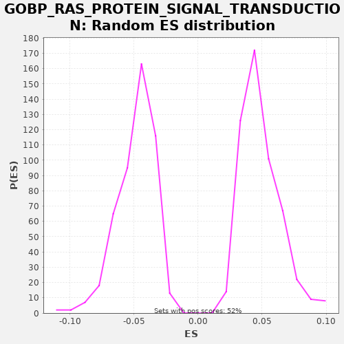

| | | Dataset | X_enriched_genes copy |
| Phenotype | NoPhenotypeAvailable |
| Upregulated in class | na_neg |
| GeneSet | GOBP_RAS_PROTEIN_SIGNAL_TRANSDUCTION |
| Enrichment Score (ES) | -0.29839084 |
| Normalized Enrichment Score (NES) | -6.11843 |
| Nominal p-value | 0.0 |
| FDR q-value | 0.0 |
| FWER p-Value | 0.0 |
Table: GSEA Results Summary
 Fig 1: Enrichment plot: GOBP_RAS_PROTEIN_SIGNAL_TRANSDUCTION
Fig 1: Enrichment plot: GOBP_RAS_PROTEIN_SIGNAL_TRANSDUCTION
Profile of the Running ES Score & Positions of GeneSet Members on the Rank Ordered List
| SYMBOL | RANK IN GENE LIST | RANK METRIC SCORE | RUNNING ES | CORE ENRICHMENT | | 1 | STMN1 | 165 | 0.273 | -0.0054 | No |
| 2 | FLOT1 | 271 | 0.208 | -0.0076 | No |
| 3 | PARK7 | 287 | 0.202 | -0.0052 | No |
| 4 | RRAS | 395 | 0.159 | -0.0075 | No |
| 5 | CFL1 | 465 | 0.144 | -0.0079 | No |
| 6 | RAB4B | 737 | 0.096 | -0.0188 | No |
| 7 | RFXANK | 751 | 0.095 | -0.0163 | No |
| 8 | RHOA | 794 | 0.088 | -0.0152 | No |
| 9 | CDKN2A | 810 | 0.086 | -0.0128 | No |
| 10 | DOK1 | 850 | 0.080 | -0.0116 | No |
| 11 | RANGRF | 1000 | 0.064 | -0.0161 | No |
| 12 | TGFB2 | 1118 | 0.054 | -0.0190 | No |
| 13 | RALA | 1127 | 0.052 | -0.0162 | No |
| 14 | TIMP2 | 1545 | 0.029 | -0.0347 | No |
| 15 | RTN4R | 1580 | 0.028 | -0.0333 | No |
| 16 | ARHGDIG | 1790 | 0.022 | -0.0409 | No |
| 17 | RHOU | 2322 | 0.014 | -0.0654 | No |
| 18 | RASGRP4 | 2393 | 0.013 | -0.0659 | No |
| 19 | LZTR1 | 2541 | 0.011 | -0.0703 | No |
| 20 | RASA4 | 3135 | 0.005 | -0.0980 | No |
| 21 | SPRY3 | 3213 | 0.005 | -0.0988 | No |
| 22 | RAB42 | 3304 | 0.004 | -0.1003 | No |
| 23 | RASGRF1 | 3329 | 0.004 | -0.0983 | No |
| 24 | RAB9B | 3730 | 0.001 | -0.1160 | No |
| 25 | KSR1 | 3742 | 0.001 | -0.1133 | No |
| 26 | GPR4 | 3883 | 0.000 | -0.1174 | No |
| 27 | RGL2 | 4108 | -0.001 | -0.1258 | No |
| 28 | F2RL3 | 4124 | -0.001 | -0.1234 | No |
| 29 | MAPKAPK5 | 4192 | -0.001 | -0.1237 | No |
| 30 | LRRD1 | 4226 | -0.002 | -0.1221 | No |
| 31 | ARHGAP4 | 4246 | -0.002 | -0.1199 | No |
| 32 | EPOR | 4328 | -0.002 | -0.1209 | No |
| 33 | RASGRP1 | 4356 | -0.002 | -0.1191 | No |
| 34 | GPR35 | 4505 | -0.003 | -0.1236 | No |
| 35 | MAPK11 | 4597 | -0.004 | -0.1251 | No |
| 36 | GPR65 | 4719 | -0.004 | -0.1282 | No |
| 37 | ARHGEF25 | 4732 | -0.004 | -0.1256 | No |
| 38 | TAX1BP3 | 5022 | -0.006 | -0.1374 | No |
| 39 | F2RL1 | 5111 | -0.006 | -0.1388 | No |
| 40 | CDC42EP5 | 5171 | -0.006 | -0.1386 | No |
| 41 | CDC42EP2 | 5230 | -0.007 | -0.1384 | No |
| 42 | MYOC | 5233 | -0.007 | -0.1353 | No |
| 43 | WAS | 5380 | -0.007 | -0.1397 | No |
| 44 | LPAR4 | 6053 | -0.010 | -0.1715 | No |
| 45 | EPS8L1 | 6131 | -0.011 | -0.1723 | No |
| 46 | RASGRP2 | 6141 | -0.011 | -0.1696 | No |
| 47 | RALGDS | 6536 | -0.012 | -0.1869 | No |
| 48 | LAT | 6551 | -0.012 | -0.1844 | No |
| 49 | RASGRP3 | 6556 | -0.012 | -0.1814 | No |
| 50 | ABRA | 6626 | -0.013 | -0.1817 | No |
| 51 | RASAL1 | 6748 | -0.013 | -0.1848 | No |
| 52 | GPR18 | 6830 | -0.014 | -0.1858 | No |
| 53 | FBP1 | 6870 | -0.014 | -0.1846 | No |
| 54 | RIPOR2 | 6925 | -0.014 | -0.1842 | No |
| 55 | VAV1 | 7186 | -0.015 | -0.1946 | No |
| 56 | RHOH | 7311 | -0.016 | -0.1978 | No |
| 57 | SH3BP1 | 7636 | -0.017 | -0.2115 | No |
| 58 | ARHGEF28 | 7676 | -0.017 | -0.2103 | No |
| 59 | GPR55 | 7765 | -0.018 | -0.2116 | No |
| 60 | RASAL3 | 7998 | -0.019 | -0.2205 | No |
| 61 | NUP62 | 8356 | -0.021 | -0.2359 | No |
| 62 | PSD2 | 8429 | -0.021 | -0.2365 | No |
| 63 | PIK3CG | 8543 | -0.022 | -0.2391 | No |
| 64 | FGF10 | 9055 | -0.025 | -0.2626 | No |
| 65 | SYNPO2L | 9127 | -0.026 | -0.2631 | No |
| 66 | CDC42 | 9343 | -0.027 | -0.2711 | No |
| 67 | RHOG | 9348 | -0.027 | -0.2680 | No |
| 68 | DENND3 | 9543 | -0.029 | -0.2749 | No |
| 69 | MRAS | 9759 | -0.030 | -0.2829 | No |
| 70 | RAPGEF3 | 9776 | -0.030 | -0.2805 | No |
| 71 | GRAP | 9876 | -0.031 | -0.2824 | No |
| 72 | ARRB1 | 9901 | -0.031 | -0.2805 | No |
| 73 | SYNGAP1 | 9923 | -0.031 | -0.2783 | No |
| 74 | CELSR1 | 9979 | -0.032 | -0.2780 | No |
| 75 | LPAR6 | 10026 | -0.032 | -0.2771 | No |
| 76 | RAB33A | 10031 | -0.032 | -0.2741 | No |
| 77 | IQSEC3 | 10196 | -0.034 | -0.2794 | No |
| 78 | NGFR | 10221 | -0.034 | -0.2775 | No |
| 79 | RASGRF2 | 10274 | -0.034 | -0.2769 | No |
| 80 | RAC2 | 10283 | -0.035 | -0.2741 | No |
| 81 | CYTH4 | 10373 | -0.035 | -0.2755 | No |
| 82 | NOTCH1 | 10418 | -0.036 | -0.2746 | No |
| 83 | AIF1 | 10460 | -0.036 | -0.2735 | No |
| 84 | DOK2 | 10609 | -0.037 | -0.2780 | No |
| 85 | IQSEC2 | 10612 | -0.037 | -0.2749 | No |
| 86 | PLCE1 | 10727 | -0.039 | -0.2776 | No |
| 87 | ARHGAP42 | 10855 | -0.040 | -0.2810 | No |
| 88 | RTKN | 10971 | -0.041 | -0.2837 | No |
| 89 | CNKSR1 | 11061 | -0.042 | -0.2852 | No |
| 90 | APOE | 11084 | -0.042 | -0.2831 | No |
| 91 | GPR20 | 11180 | -0.043 | -0.2848 | No |
| 92 | APOA1 | 11217 | -0.043 | -0.2834 | No |
| 93 | KCTD13 | 11238 | -0.043 | -0.2812 | No |
| 94 | RAB12 | 11260 | -0.043 | -0.2791 | No |
| 95 | DENND4B | 11366 | -0.045 | -0.2814 | No |
| 96 | RHOD | 11515 | -0.046 | -0.2859 | No |
| 97 | IGF1 | 11547 | -0.047 | -0.2842 | No |
| 98 | SGSM3 | 11819 | -0.050 | -0.2952 | Yes |
| 99 | RAB4A | 11843 | -0.051 | -0.2931 | Yes |
| 100 | PDPN | 11933 | -0.052 | -0.2945 | Yes |
| 101 | RIPOR1 | 11995 | -0.052 | -0.2945 | Yes |
| 102 | ITPKB | 12051 | -0.053 | -0.2941 | Yes |
| 103 | RABL3 | 12086 | -0.054 | -0.2927 | Yes |
| 104 | RHOV | 12156 | -0.055 | -0.2930 | Yes |
| 105 | BCL6 | 12165 | -0.055 | -0.2902 | Yes |
| 106 | STARD13 | 12180 | -0.055 | -0.2877 | Yes |
| 107 | PSD | 12274 | -0.056 | -0.2893 | Yes |
| 108 | F2RL2 | 12295 | -0.057 | -0.2871 | Yes |
| 109 | CAVIN4 | 12307 | -0.057 | -0.2845 | Yes |
| 110 | RAB15 | 12337 | -0.057 | -0.2828 | Yes |
| 111 | RAB30 | 12354 | -0.057 | -0.2804 | Yes |
| 112 | CDC42EP4 | 12394 | -0.058 | -0.2792 | Yes |
| 113 | CCDC125 | 12400 | -0.058 | -0.2762 | Yes |
| 114 | SHC3 | 12438 | -0.059 | -0.2749 | Yes |
| 115 | GPSM2 | 12482 | -0.059 | -0.2739 | Yes |
| 116 | ARHGAP44 | 12505 | -0.060 | -0.2718 | Yes |
| 117 | EPS8L2 | 12665 | -0.062 | -0.2769 | Yes |
| 118 | PSD4 | 12705 | -0.062 | -0.2757 | Yes |
| 119 | CDC42EP3 | 12775 | -0.063 | -0.2760 | Yes |
| 120 | KANK1 | 12782 | -0.064 | -0.2731 | Yes |
| 121 | TRIM28 | 12823 | -0.064 | -0.2720 | Yes |
| 122 | CYTH2 | 12860 | -0.065 | -0.2706 | Yes |
| 123 | RASIP1 | 12929 | -0.066 | -0.2709 | Yes |
| 124 | RALGPS1 | 12962 | -0.066 | -0.2694 | Yes |
| 125 | RHOJ | 13094 | -0.069 | -0.2730 | Yes |
| 126 | TIAM1 | 13096 | -0.069 | -0.2698 | Yes |
| 127 | RIT1 | 13100 | -0.069 | -0.2667 | Yes |
| 128 | SHC2 | 13222 | -0.070 | -0.2698 | Yes |
| 129 | DLC1 | 13291 | -0.071 | -0.2701 | Yes |
| 130 | BRK1 | 13540 | -0.076 | -0.2798 | Yes |
| 131 | STAMBP | 13548 | -0.076 | -0.2770 | Yes |
| 132 | OPHN1 | 13606 | -0.077 | -0.2767 | Yes |
| 133 | RAB33B | 13622 | -0.077 | -0.2742 | Yes |
| 134 | NGF | 13626 | -0.077 | -0.2712 | Yes |
| 135 | ARHGDIB | 13670 | -0.078 | -0.2702 | Yes |
| 136 | HACD3 | 13739 | -0.079 | -0.2705 | Yes |
| 137 | SPRY4 | 13779 | -0.079 | -0.2693 | Yes |
| 138 | GNB1 | 13789 | -0.080 | -0.2665 | Yes |
| 139 | FGF2 | 13892 | -0.081 | -0.2686 | Yes |
| 140 | ADRA2A | 13894 | -0.081 | -0.2654 | Yes |
| 141 | CDH13 | 13937 | -0.082 | -0.2644 | Yes |
| 142 | ARFGAP1 | 13951 | -0.083 | -0.2618 | Yes |
| 143 | ARHGAP24 | 13987 | -0.083 | -0.2604 | Yes |
| 144 | GDI1 | 14023 | -0.084 | -0.2590 | Yes |
| 145 | PDGFRB | 14040 | -0.084 | -0.2566 | Yes |
| 146 | NTN1 | 14180 | -0.087 | -0.2606 | Yes |
| 147 | CDC42EP1 | 14210 | -0.087 | -0.2589 | Yes |
| 148 | ALS2 | 14219 | -0.088 | -0.2561 | Yes |
| 149 | PLEKHG5 | 14262 | -0.089 | -0.2551 | Yes |
| 150 | CYTH1 | 14314 | -0.090 | -0.2545 | Yes |
| 151 | RAP2B | 14371 | -0.091 | -0.2542 | Yes |
| 152 | TRIM67 | 14420 | -0.092 | -0.2534 | Yes |
| 153 | HEG1 | 14440 | -0.092 | -0.2512 | Yes |
| 154 | PRKD1 | 14445 | -0.093 | -0.2482 | Yes |
| 155 | RB1 | 14535 | -0.094 | -0.2496 | Yes |
| 156 | LYN | 14544 | -0.094 | -0.2468 | Yes |
| 157 | ARHGAP6 | 14589 | -0.095 | -0.2458 | Yes |
| 158 | CDC42SE1 | 14625 | -0.096 | -0.2444 | Yes |
| 159 | COL3A1 | 14673 | -0.097 | -0.2436 | Yes |
| 160 | EPHB2 | 14749 | -0.099 | -0.2443 | Yes |
| 161 | G3BP1 | 14801 | -0.099 | -0.2437 | Yes |
| 162 | GRB2 | 14806 | -0.099 | -0.2407 | Yes |
| 163 | IQSEC1 | 14839 | -0.100 | -0.2392 | Yes |
| 164 | MET | 14871 | -0.101 | -0.2375 | Yes |
| 165 | DBNL | 14884 | -0.101 | -0.2349 | Yes |
| 166 | PSD3 | 14959 | -0.102 | -0.2356 | Yes |
| 167 | SCAI | 14964 | -0.102 | -0.2325 | Yes |
| 168 | ARHGEF3 | 15036 | -0.104 | -0.2330 | Yes |
| 169 | LIMK1 | 15053 | -0.104 | -0.2306 | Yes |
| 170 | CBL | 15119 | -0.106 | -0.2308 | Yes |
| 171 | RALGPS2 | 15129 | -0.106 | -0.2280 | Yes |
| 172 | PRAG1 | 15193 | -0.107 | -0.2281 | Yes |
| 173 | PLD1 | 15248 | -0.108 | -0.2276 | Yes |
| 174 | RASGEF1A | 15257 | -0.108 | -0.2248 | Yes |
| 175 | ARHGEF11 | 15314 | -0.110 | -0.2245 | Yes |
| 176 | KSR2 | 15354 | -0.110 | -0.2233 | Yes |
| 177 | RCC1 | 15360 | -0.111 | -0.2203 | Yes |
| 178 | FARP2 | 15382 | -0.111 | -0.2182 | Yes |
| 179 | SPRY1 | 15413 | -0.112 | -0.2165 | Yes |
| 180 | CSF1 | 15421 | -0.112 | -0.2137 | Yes |
| 181 | MAPKAP1 | 15479 | -0.114 | -0.2134 | Yes |
| 182 | NRAS | 15514 | -0.114 | -0.2119 | Yes |
| 183 | FLCN | 15519 | -0.114 | -0.2089 | Yes |
| 184 | ELMO1 | 15539 | -0.115 | -0.2067 | Yes |
| 185 | ARHGEF10 | 15541 | -0.115 | -0.2035 | Yes |
| 186 | GNA12 | 15560 | -0.115 | -0.2012 | Yes |
| 187 | HRAS | 15671 | -0.118 | -0.2037 | Yes |
| 188 | COL1A2 | 15701 | -0.119 | -0.2020 | Yes |
| 189 | FOXM1 | 15718 | -0.119 | -0.1996 | Yes |
| 190 | RASA2 | 15733 | -0.120 | -0.1971 | Yes |
| 191 | RREB1 | 15812 | -0.121 | -0.1979 | Yes |
| 192 | ARHGEF1 | 15843 | -0.122 | -0.1962 | Yes |
| 193 | FBXO8 | 15898 | -0.123 | -0.1958 | Yes |
| 194 | F11R | 15899 | -0.123 | -0.1926 | Yes |
| 195 | CCNA2 | 15930 | -0.124 | -0.1909 | Yes |
| 196 | ARFGEF3 | 15973 | -0.125 | -0.1899 | Yes |
| 197 | G3BP2 | 15991 | -0.126 | -0.1875 | Yes |
| 198 | ARHGAP17 | 15995 | -0.126 | -0.1844 | Yes |
| 199 | KANK2 | 16085 | -0.128 | -0.1859 | Yes |
| 200 | STK19 | 16096 | -0.129 | -0.1831 | Yes |
| 201 | ADGRG1 | 16152 | -0.130 | -0.1828 | Yes |
| 202 | RAP1A | 16185 | -0.131 | -0.1812 | Yes |
| 203 | RAC1 | 16203 | -0.131 | -0.1789 | Yes |
| 204 | KCTD10 | 16205 | -0.131 | -0.1757 | Yes |
| 205 | USP28 | 16224 | -0.132 | -0.1734 | Yes |
| 206 | ARHGAP29 | 16248 | -0.133 | -0.1714 | Yes |
| 207 | RALB | 16314 | -0.134 | -0.1715 | Yes |
| 208 | ARHGEF18 | 16362 | -0.136 | -0.1707 | Yes |
| 209 | CYTH3 | 16375 | -0.136 | -0.1681 | Yes |
| 210 | NOTCH2 | 16395 | -0.137 | -0.1659 | Yes |
| 211 | JAK2 | 16407 | -0.137 | -0.1632 | Yes |
| 212 | DENND4A | 16411 | -0.137 | -0.1601 | Yes |
| 213 | RASSF1 | 16412 | -0.137 | -0.1569 | Yes |
| 214 | ITGA3 | 16479 | -0.139 | -0.1571 | Yes |
| 215 | RAB39B | 16492 | -0.139 | -0.1545 | Yes |
| 216 | DAB2IP | 16501 | -0.140 | -0.1517 | Yes |
| 217 | OGT | 16512 | -0.140 | -0.1490 | Yes |
| 218 | RRAS2 | 16524 | -0.140 | -0.1463 | Yes |
| 219 | DENND1A | 16581 | -0.142 | -0.1460 | Yes |
| 220 | WASF2 | 16591 | -0.143 | -0.1432 | Yes |
| 221 | ARF6 | 16604 | -0.143 | -0.1406 | Yes |
| 222 | RAPGEF2 | 16605 | -0.143 | -0.1374 | Yes |
| 223 | RAB35 | 16628 | -0.144 | -0.1353 | Yes |
| 224 | ABL1 | 16634 | -0.144 | -0.1323 | Yes |
| 225 | RAP2A | 16640 | -0.144 | -0.1293 | Yes |
| 226 | RDX | 16677 | -0.145 | -0.1280 | Yes |
| 227 | CDK2 | 16715 | -0.147 | -0.1267 | Yes |
| 228 | ABCA1 | 16738 | -0.147 | -0.1246 | Yes |
| 229 | RAPGEF1 | 16739 | -0.147 | -0.1214 | Yes |
| 230 | ARHGDIA | 16759 | -0.148 | -0.1191 | Yes |
| 231 | CADM4 | 16794 | -0.149 | -0.1177 | Yes |
| 232 | PPP2CB | 16804 | -0.150 | -0.1149 | Yes |
| 233 | IQGAP3 | 16848 | -0.151 | -0.1139 | Yes |
| 234 | SHTN1 | 17024 | -0.157 | -0.1198 | Yes |
| 235 | ARHGEF2 | 17164 | -0.161 | -0.1238 | Yes |
| 236 | USP50 | 17165 | -0.161 | -0.1206 | Yes |
| 237 | HACE1 | 17200 | -0.163 | -0.1191 | Yes |
| 238 | BRAP | 17204 | -0.163 | -0.1161 | Yes |
| 239 | SHC1 | 17225 | -0.164 | -0.1139 | Yes |
| 240 | LPAR1 | 17311 | -0.167 | -0.1151 | Yes |
| 241 | PLK2 | 17359 | -0.169 | -0.1143 | Yes |
| 242 | EPS8 | 17385 | -0.170 | -0.1124 | Yes |
| 243 | PIK3CB | 17432 | -0.171 | -0.1115 | Yes |
| 244 | F2R | 17438 | -0.171 | -0.1085 | Yes |
| 245 | MAPK14 | 17451 | -0.172 | -0.1059 | Yes |
| 246 | STMN3 | 17498 | -0.173 | -0.1051 | Yes |
| 247 | MFN2 | 17544 | -0.175 | -0.1042 | Yes |
| 248 | CRKL | 17628 | -0.180 | -0.1053 | Yes |
| 249 | DENND4C | 17695 | -0.183 | -0.1055 | Yes |
| 250 | DNM2 | 17740 | -0.185 | -0.1046 | Yes |
| 251 | RAP2C | 17761 | -0.186 | -0.1024 | Yes |
| 252 | CDC42SE2 | 17833 | -0.190 | -0.1029 | Yes |
| 253 | SHOC2 | 17849 | -0.190 | -0.1004 | Yes |
| 254 | WASF1 | 17852 | -0.190 | -0.0973 | Yes |
| 255 | MADD | 17894 | -0.193 | -0.0962 | Yes |
| 256 | RAB21 | 17896 | -0.193 | -0.0930 | Yes |
| 257 | SOS1 | 17942 | -0.195 | -0.0921 | Yes |
| 258 | RASA1 | 17954 | -0.195 | -0.0895 | Yes |
| 259 | GBF1 | 17995 | -0.197 | -0.0883 | Yes |
| 260 | ARHGAP5 | 18000 | -0.197 | -0.0853 | Yes |
| 261 | AUTS2 | 18006 | -0.197 | -0.0823 | Yes |
| 262 | RERG | 18024 | -0.199 | -0.0800 | Yes |
| 263 | CDKN1A | 18051 | -0.200 | -0.0781 | Yes |
| 264 | NF1 | 18057 | -0.201 | -0.0751 | Yes |
| 265 | MYO9B | 18073 | -0.202 | -0.0727 | Yes |
| 266 | NISCH | 18074 | -0.202 | -0.0694 | Yes |
| 267 | RASA3 | 18080 | -0.202 | -0.0664 | Yes |
| 268 | TNFAIP1 | 18087 | -0.202 | -0.0635 | Yes |
| 269 | LRRC59 | 18113 | -0.203 | -0.0616 | Yes |
| 270 | SPRY2 | 18161 | -0.206 | -0.0608 | Yes |
| 271 | NET1 | 18170 | -0.207 | -0.0580 | Yes |
| 272 | BCR | 18196 | -0.208 | -0.0561 | Yes |
| 273 | MAPRE2 | 18202 | -0.208 | -0.0531 | Yes |
| 274 | RAF1 | 18239 | -0.211 | -0.0517 | Yes |
| 275 | CHUK | 18271 | -0.213 | -0.0501 | Yes |
| 276 | AKAP13 | 18274 | -0.213 | -0.0470 | Yes |
| 277 | GNA13 | 18324 | -0.216 | -0.0463 | Yes |
| 278 | SQSTM1 | 18346 | -0.217 | -0.0442 | Yes |
| 279 | ABI2 | 18362 | -0.218 | -0.0417 | Yes |
| 280 | ARHGAP1 | 18468 | -0.225 | -0.0440 | Yes |
| 281 | ABL2 | 18511 | -0.228 | -0.0429 | Yes |
| 282 | RAP1B | 18529 | -0.230 | -0.0406 | Yes |
| 283 | KRAS | 18541 | -0.230 | -0.0379 | Yes |
| 284 | ARFGEF2 | 18559 | -0.232 | -0.0356 | Yes |
| 285 | USP8 | 18581 | -0.234 | -0.0334 | Yes |
| 286 | ARHGAP35 | 18661 | -0.241 | -0.0343 | Yes |
| 287 | IRS2 | 18670 | -0.242 | -0.0315 | Yes |
| 288 | ERBIN | 18680 | -0.244 | -0.0287 | Yes |
| 289 | CRK | 18689 | -0.244 | -0.0259 | Yes |
| 290 | PHACTR4 | 18708 | -0.246 | -0.0236 | Yes |
| 291 | RHOB | 18800 | -0.256 | -0.0251 | Yes |
| 292 | KIF14 | 18865 | -0.264 | -0.0252 | Yes |
| 293 | ARFGEF1 | 18912 | -0.268 | -0.0244 | Yes |
| 294 | MAP4K4 | 18938 | -0.271 | -0.0225 | Yes |
| 295 | ARHGEF12 | 18973 | -0.276 | -0.0210 | Yes |
| 296 | CTNNAL1 | 18995 | -0.279 | -0.0189 | Yes |
| 297 | ROBO1 | 19014 | -0.281 | -0.0166 | Yes |
| 298 | NCKAP1 | 19057 | -0.289 | -0.0155 | Yes |
| 299 | SETDB1 | 19060 | -0.290 | -0.0124 | Yes |
| 300 | NRP1 | 19112 | -0.299 | -0.0118 | Yes |
| 301 | SSX2IP | 19182 | -0.314 | -0.0122 | Yes |
| 302 | CYFIP1 | 19212 | -0.324 | -0.0105 | Yes |
| 303 | RAPGEF6 | 19222 | -0.327 | -0.0077 | Yes |
| 304 | ROCK1 | 19306 | -0.356 | -0.0088 | Yes |
| 305 | CUL3 | 19329 | -0.369 | -0.0067 | Yes |
| 306 | KPNB1 | 19380 | -0.412 | -0.0061 | Yes |
| 307 | JUN | 19394 | -0.432 | -0.0035 | Yes |
| 308 | ROCK2 | 19417 | -0.460 | -0.0015 | Yes |
| 309 | DNMT1 | 19431 | -0.480 | 0.0011 | Yes |
Table: GSEA details [plain text format]

Fig 2: GOBP_RAS_PROTEIN_SIGNAL_TRANSDUCTION: Random ES distribution
Gene set null distribution of ES for GOBP_RAS_PROTEIN_SIGNAL_TRANSDUCTION